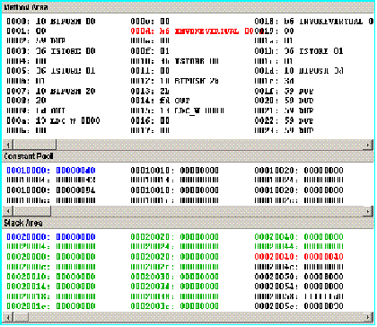

The three Memory Views shows the Mic-1 MMVmemory as three different segments. The base address and size of each area are specified by Preference entries. The user can also set preferences for enabling Memory View tracking and highlighting. Tracking refers to automatic scrolling of Memory Views to active locations during simulation. Highlighting, when enabled, will shows these in alternate colors. Highlighting in the Stack Area will displays the complete current stack. Note that the Method Area displays individual bytes, while the Constant Pool and Stack Area are shown as 4-byte words.
